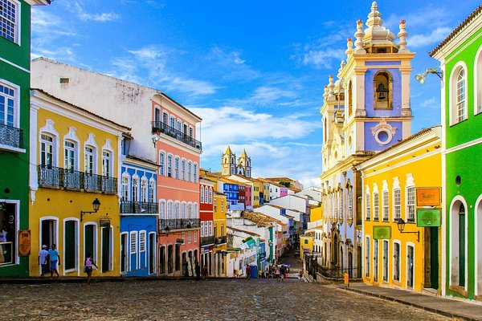
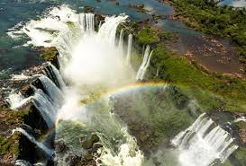
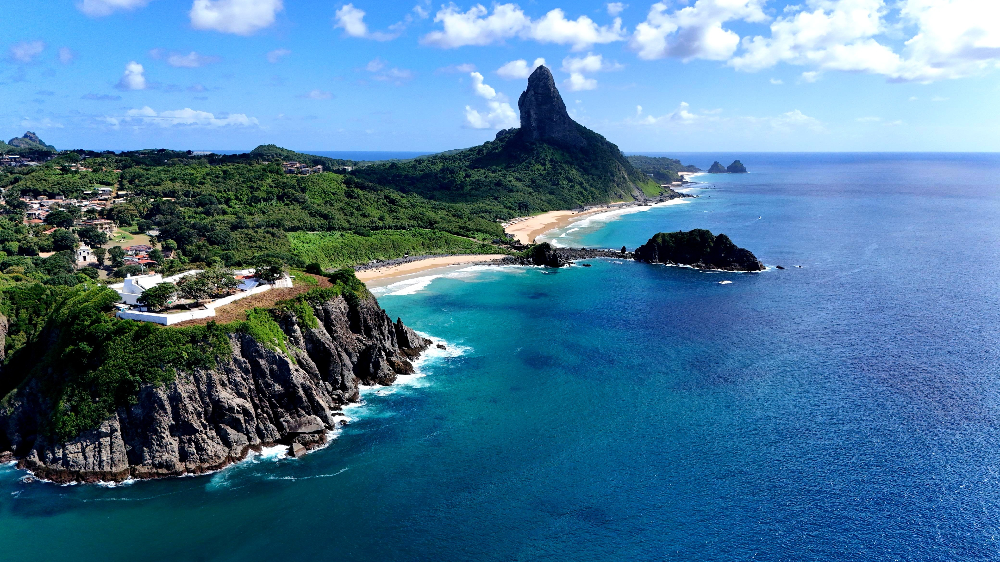
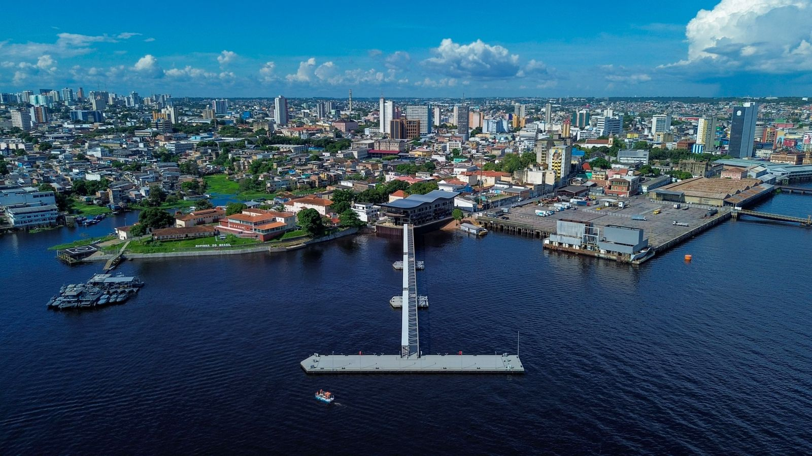

Rio de Janeiro
Um dos destinos mais famosos do mundo, combina praias icônicas como Copacabana e Ipanema com paisagens naturais impressionantes. Seu grande destaque é o Cristo Redentor, que oferece uma vista panorâmica inesquecível da cidade.

Salvador
Rica em história e cultura, é conhecida por seu centro histórico, o Pelourinho, com casarões coloridos e ruas de pedra. A cidade também é berço de fortes tradições afro-brasileiras, refletidas na música, culinária e festas populares.

Foz do Iguaçu
Um espetáculo da natureza, abriga as incríveis Cataratas do Iguaçu, consideradas uma das maiores e mais impressionantes quedas d’água do planeta, proporcionando uma experiência única aos visitantes.

Gramado
Localizada na Serra Gaúcha, encanta pelo clima mais frio e arquitetura inspirada em cidades europeias. É famosa por seus festivais, especialmente o Natal Luz, que transforma a cidade em um cenário mágico.

Fernando de Noronha
Um verdadeiro paraíso natural, conhecido por suas águas cristalinas, rica vida marinha e praias preservadas. É o destino ideal para quem busca tranquilidade e contato direto com a natureza.

Manaus
Situada no coração da Amazônia, é o ponto de partida para explorar a maior floresta tropical do mundo. Um dos fenômenos mais fascinantes da região é o encontro das águas dos rios Negro e Solimões, que correm lado a lado sem se misturar.
